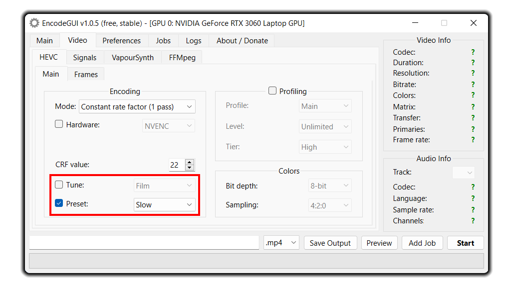

HEVC
This codec is similar to the AVC counterpart, but adds much higher compression to the video without loss of quality. Since HEVC uses a complex encoding algorithm, it requires more power to stream the video than AVC. Hardware encoding support is available for HEVC and can be enabled using theHardware checkbox in the HEVC > Main tab. Scroll down this page for more details. The supported hardware encoders are: NVENC (Nvidia), QuickSync (Intel), or AMF (AMD).Recommend for:
Very high compression, very high resolution videos (up to 8192x4352), videos with HDR10(+), very high color depth (up to 12-bit).
NOT recommend for:
Videos intended to be viewed on mobile devices (battery killer due to HEVC complex encoding algorithm), videos intended to be streamed on older devices (before 2016), fast speed encoding.
How to Use
Encoding Mode
Constant Rate Factor (1 pass):This is the recommended option. The video bitrate is automatically adjusted during the encoding process in accordance with the CRF value to provide a high quality output while having a highly compressed video.
Lower values = better quality (min: 0).
Higher value = lower quality (max: 51).
Lossless quality = 0.
Recommend option = 17.
Average Bitrate (1 pass):
Encodes the video in a defined average bitrate (kbits/s). The required bitrate varies on the basis of the resolution of the video, the frame rate, and the colors.
Higher value = higher quality.
Lower value = lower quality.
Target Bitrate (2 pass):
Encodes the video to a specified file size or a specific bitrate. This option is recommended if you need the video file to be at a specific file size. This encoding method is 2 pass, meaning the video encodes twice.
Constant Quantizer (1 pass):
This option is similar to Constant Rate Factor, but does not consider the visual aspects when encoding the video like Constant Rate Factor. This is the next best alternative to Constant Rate Factor rate control.
Lower values = better quality (min: 0).
Higher value = lower quality (max: 51).
Lossless quality = 0.
Recommend option = 17.
Hardware Encoding
Hardware encoding is available as an option for much faster encoding speeds. Colors, Profile, Tune, Reference Frames, and B-frames are disabled when hardware encoding is enabled.
Note: Hardware encoding isn’t recommended to use because it does not produce the same high quality video that the software encoding counterpart has.
NVENC:
This hardware encoder utilizes Nvidia GPUs. Constant Quantizer, Average bitrate, and Target Bitrate are all supported rate controls.
QuickSync:
This hardware encoder utilizes Intel GPUs. As of v1.0.3, Constant Quantizer, Average bitrate, and Target Bitrate are all supported rate controls.
AMF:
This hardware encoder utilizes AMD GPUs. As of v1.0.3, Constant Quantizer, Average bitrate, and Target Bitrate are all supported rate controls.
Profile and Tune

Tune:Sets the tune for the video on the basis of what type of video the source is.
Preset:
Sets the CPU preset (speed) to use for encoding.
Higher preset = faster encode but lower quality.
Lower preset = slower encode but higher quality.
Recommended: slow
HEVC Profiling
You can manually adjust the profile if your video consists of high color depth and color sampling. Disabling it will simply allow the encoder to automatically assign the profile, level and colors (recommended).Profile:
The encoding profile to use. The recommended option to use is Main for most videos. Select Main 10 for videos in 10-bit color depth and adjust the color depth in the colors group box. For videos in 4:2:2 or 4:4:4 sampling, set the profile to Main 4:4:4 and set the color sampling to 4:2:2 or 4:4:4 in the colors group box.
Level:
The level to assign to the video profile. This option should be set on the basis of the resolution and frame rate of the video. Use a higher level for high frame rate / resolution videos and use a lower value for low frame rate / resolution videos. Set the Unlimited to allow the encoder to automatically assign a level (recommended).
Frames
Reference Frames:The number of reference frames for the encoder to use. Reference frames help define future frames.
B Frames:
The number of B-frames/prediction frames to assign to the video. B-frames act as compression frames in the video.
Signals
HEVC signaling allows you to add HDR10(+) metadata to the video and/or specify the color spaces in HEVC metadata.HDR10(+) Metadata
Sets the HDR Metadata for HEVC encoding.Max CLL/FALL:
Both set the minimum and maximum light level content (in luminance) in the video.
Master Display:
Master display specifies the "tuning" color space for displaying HDR content. The default is specified to DCI-P3. Read this thread for more details on calculating other color spaces for master display.
Dynamic Metadata:
This option allows you to specify dynamic HDR metadata for HDR10+ videos. Only
.json metadata files are accepted as an input.HEVC Color Spaces
Allows you to specify the color spaces in HEVC metadata. This option is required to use if you are encoding HDR content. This option won't convert the color spaces.Range: Sets the color range for the video. Most videos will use
Limited.Matrix: Sets the color matrix for the video in metadata. Use
BT2020nc for HDR videos.Transfer: Sets the color transfer for the video in metadata. Use
SMPTE2084 for HDR videos.Primaries: Sets the color primaries for the video in metadata. Use
BT2020 for HDR videos.